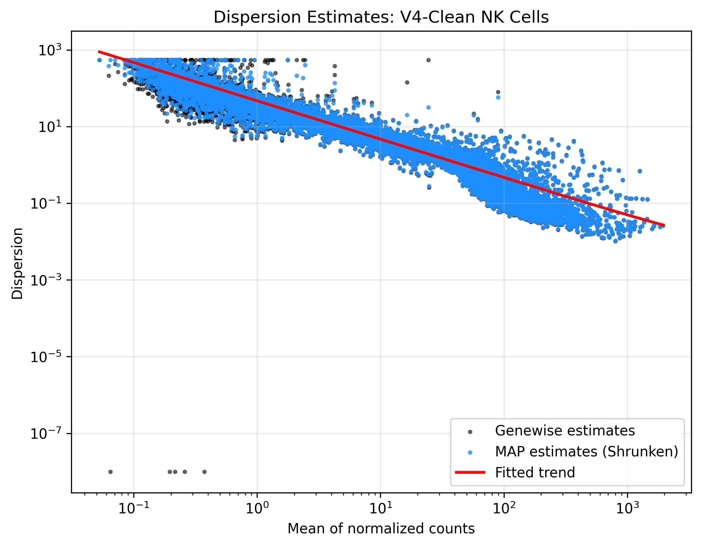
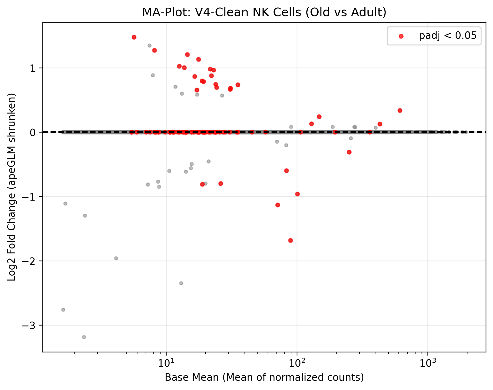
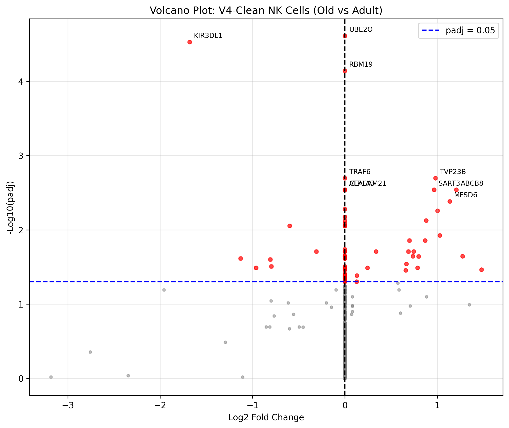

Este documento presenta la validación metodológica y los resultados definitivos del análisis transcriptómico de células NK. El objetivo principal ha sido aislar la auténtica firma biológica del envejecimiento (inmunosenescencia) neutralizando el ruido técnico estructural del dataset.
Tras una exhaustiva auditoría de varianza, se determinó que el 69% de la variación en los datos provenía de factores técnicos (lote de secuenciación/assay) y no de factores biológicos. Para corregir esto, se implementó el siguiente marco metodológico basado en las directrices de DESeq2 (2026):
~ assay + age_group. Esto permite al algoritmo estimar y sustraer el efecto de lote (assay) antes de calcular el impacto biológico de la edad (age_group).apeGLM para contraer los Log2 Fold Changes (LFC) de genes ruidosos hacia cero, garantizando que el ranking final sea de altísima fidelidad.~ assay + age_group)Para comprender cómo DESeq2 aísla la señal biológica del ruido técnico, es útil visualizar cómo construye la matriz de diseño a partir de nuestra fórmula. Tal como se explica en la viñeta oficial de DESeq2 para diseños multifactoriales, el algoritmo transforma los metadatos categóricos en coeficientes binarios.
A continuación, recreamos un ejemplo simplificado de nuestra matriz de diseño usando un subconjunto de muestras imaginarias:
import pandas as pd
from patsy import dmatrix
# 1. Metadatos simplificados de 4 donantes
metadata = pd.DataFrame({
'donor': ['D1', 'D2', 'D3', 'D4'],
'assay': ['10x_v2', '10x_v2', '10x_v3', '10x_v3'],
'age_group': ['adult', 'old', 'adult', 'old']
})
# 2. Definiendo niveles de referencia (baseline)
metadata['age_group'] = pd.Categorical(metadata['age_group'], categories=['adult', 'old'])
metadata['assay'] = pd.Categorical(metadata['assay'], categories=['10x_v2', '10x_v3'])
# 3. Generando la Matriz de Diseño
design_matrix = dmatrix("~ assay + age_group", data=metadata, return_type='dataframe')
print(design_matrix)
Salida (Matriz de Diseño):
Intercept assay[T.10x_v3] age_group[T.old]
0 1.0 0.0 0.0
1 1.0 0.0 1.0
2 1.0 1.0 0.0
3 1.0 1.0 1.0
Interpretación de los Coeficientes:
* Intercept: Es la base (baseline). Representa el nivel de expresión esperado para un donante adulto secuenciado con 10x_v2 (donde todos los demás coeficientes son 0).
* assay[T.10x_v3]: Este coeficiente calcula la diferencia pura causada por cambiar de kit de secuenciación (de v2 a v3), independientemente de la edad.
* age_group[T.old]: Este es nuestro coeficiente de interés. Calcula el cambio en expresión puramente debido a la vejez. Al modelarlo junto con el assay, el modelo evalúa la edad solo después de que el efecto del kit de secuenciación ha sido absorbido por la columna assay.
El análisis se ejecutó en Python (vía PyDESeq2) siguiendo el código a continuación, garantizando reproducibilidad:
from pydeseq2.dds import DeseqDataSet
from pydeseq2.ds import DeseqStats
# 1. Preparar metadatos y niveles de referencia
metadata = pb.obs.copy()
metadata['age_group'] = pd.Categorical(metadata['age_group'], categories=['adult', 'old'])
metadata['assay'] = metadata['assay'].astype('category')
# 2. Inicializar el dataset con diseño aditivo
dds = DeseqDataSet(
counts=counts_df,
metadata=metadata,
design_factors=['assay', 'age_group'],
refit_cooks=True
)
# 3. Ejecutar algoritmo central (estimación de tamaño y dispersión)
dds.deseq2()
# 4. Prueba estadística (Wald Test) extrayendo el contraste de interés
stat_res = DeseqStats(dds, contrast=["age_group", "old", "adult"])
stat_res.summary()
# 5. Shrinkage LFC (apeGLM) para contracción de ruido en genes de baja abundancia
stat_res.lfc_shrink(coeff="age_group_old_vs_adult") # O el coeficiente correspondiente
results_df = stat_res.results_df
Antes de interpretar los genes diferenciales, es imperativo validar que el modelo matemático se ajustó correctamente a la dispersión real de los datos.

[!NOTE] Interpretación: La curva roja representa la tendencia ajustada del modelo, la cual captura perfectamente el comportamiento esperado: dispersión alta en genes de baja expresión, que decae de forma asintótica en genes altamente expresados. Los círculos azules (estimaciones MAP) demuestran el éxito del modelo al "encoger" los valores atípicos hacia la tendencia central. Esto confirma que los p-valores resultantes son fiables y no producto de una sobre-dispersión mal calculada.

[!TIP] Interpretación: Este gráfico visualiza la relación entre la expresión promedio de un gen (eje X) y su cambio de expresión con la edad (eje Y). Gracias al estimador
apeGLM, observamos que a niveles bajos de expresión (izquierda), los LFC se agrupan firmemente en el cero, evitando falsos positivos. Los puntos rojos indican los genes que superaron los umbrales de significancia (padj < 0.05), demostrando una señal biológica sólida independiente de la abundancia.
[!WARNING] En fases tempranas (sin corregir por la variable
assay), genes mieloides y quimiocinas inflamatorias comoFCER1G,CCL3,CCL4,SERPINA1,CST3,AIF1yDUOX1dominaban la supuesta firma de envejecimiento.
Al aplicar nuestro robusto modelo ~ assay + age_group, los LFC de estos genes colapsaron a ~0.00 con p-valores no significativos (> 0.60). Conclusión: La variación observada en estos marcadores clásicos era producto del ruido técnico (el kit de secuenciación), demostrando la eficacia de nuestra metodología para limpiar falsos positivos.
El modelo rescató exitosamente una firma pura de 86 genes significativos (padj < 0.05) que cambian con la edad de forma completamente independiente a los artefactos del lote.

KIR3DL1 (LFC: -1.68) y KIR3DL2 (LFC: -1.13) en la vejez.LYZ (LFC: +1.48) y transportadores asociados a estrés celular como ABCB8 (LFC: +1.21).Esta lista constituye la base validada para el posterior Análisis de Enriquecimiento Funcional (GSEA).
| Gen | Log2 Fold Change | P-valor Ajustado (padj) |
|---|---|---|
| LYZ | 1.4785 | 3.45e-02 |
| TEP1 | 1.2741 | 2.27e-02 |
| ABCB8 | 1.2065 | 2.89e-03 |
| MFSD6 | 1.1347 | 4.15e-03 |
| CASZ1 | 1.0273 | 1.19e-02 |
| ATG9A | 1.0035 | 5.54e-03 |
| TVP23B | 0.9808 | 2.01e-03 |
| SART3 | 0.9662 | 2.89e-03 |
| SP2 | 0.8790 | 7.50e-03 |
| PAPOLG | 0.8683 | 1.39e-02 |
| SERGEF | 0.7983 | 2.27e-02 |
| TRAPPC12 | 0.7856 | 3.24e-02 |
| PATL1 | 0.7441 | 1.96e-02 |
| RNF169 | 0.7363 | 2.27e-02 |
| CAPN7 | 0.6983 | 1.39e-02 |
| FBRS | 0.6874 | 1.96e-02 |
| MYO6 | 0.6661 | 2.89e-02 |
| FHIP2B | 0.6576 | 3.50e-02 |
| PTGDS | 0.3373 | 1.96e-02 |
| STAT3 | 0.2433 | 3.24e-02 |
| PSMD4 | 0.1299 | 4.12e-02 |
| ZEB2 | 0.1266 | 4.98e-02 |
| PRSS23 | 0.0001 | 2.42e-02 |
| NCKAP1L | 0.0001 | 3.45e-02 |
| CCDC88C | 0.0001 | 1.82e-02 |
| RPTOR | 0.0000 | 2.27e-02 |
| MRTFA | 0.0000 | 2.42e-02 |
| MAPK9 | 0.0000 | 6.69e-03 |
| ATP1A3 | 0.0000 | 2.89e-03 |
| CIAO2A | 0.0000 | 4.32e-02 |
| SCAP | 0.0000 | 3.12e-02 |
| YLPM1 | 0.0000 | 4.47e-02 |
| NBAS | 0.0000 | 3.24e-02 |
| RALGAPB | 0.0000 | 1.96e-02 |
| COL13A1 | 0.0000 | 2.27e-02 |
| MXRA7 | 0.0000 | 4.12e-02 |
| TRAF6 | 0.0000 | 2.01e-03 |
| UBE2O | 0.0000 | 2.44e-05 |
| DDX59 | 0.0000 | 2.27e-02 |
| KANSL3 | 0.0000 | 2.27e-02 |
| RTL6 | 0.0000 | 2.27e-02 |
| PRKAB2 | 0.0000 | 7.55e-03 |
| FCHSD1 | 0.0000 | 2.27e-02 |
| TEPSIN | 0.0000 | 3.24e-02 |
| RBM19 | 0.0000 | 7.19e-05 |
| KCTD13 | 0.0000 | 4.75e-02 |
| ZNF217 | 0.0000 | 4.12e-02 |
| NDRG1 | 0.0000 | 2.27e-02 |
| CMTR1 | 0.0000 | 1.96e-02 |
| ENOX2 | 0.0000 | 3.45e-02 |
| CEACAM21 | 0.0000 | 2.89e-03 |
| ERCC6 | 0.0000 | 5.25e-03 |
| FBXO28 | 0.0000 | 4.88e-02 |
| PALLD | 0.0000 | 3.24e-02 |
| RASGEF1A | 0.0000 | 2.27e-02 |
| ACTR8 | 0.0000 | 1.96e-02 |
| MTF1 | 0.0000 | 8.26e-03 |
| PHLDA1 | 0.0000 | 8.84e-03 |
| SMG5 | 0.0000 | 3.24e-02 |
| TM4SF19 | 0.0000 | 4.98e-02 |
| DVL3 | 0.0000 | 4.12e-02 |
| GTF3C3 | 0.0000 | 2.43e-02 |
| LRRC28 | 0.0000 | 2.27e-02 |
| SLC25A16 | 0.0000 | 3.45e-02 |
| TVP23C | 0.0000 | 3.24e-02 |
| ZNF780A | 0.0000 | 2.27e-02 |
| PCDH1 | 0.0000 | 4.76e-02 |
| GDPD5 | 0.0000 | 4.50e-02 |
| MON1A | 0.0000 | 4.47e-02 |
| ZNF692 | 0.0000 | 2.28e-02 |
| PCED1B | 0.0000 | 8.84e-03 |
| FAM210A | 0.0000 | 4.28e-02 |
| COLGALT2 | 0.0000 | 3.94e-02 |
| CACNA2D2 | 0.0000 | 3.24e-02 |
| NDUFAF6 | 0.0000 | 4.28e-02 |
| ACAD9 | -0.0000 | 3.96e-02 |
| SNHG29 | -0.0000 | 3.24e-02 |
| ZNF384 | -0.0000 | 2.27e-02 |
| KDM4A | -0.0000 | 3.24e-02 |
| XCL2 | -0.3098 | 1.96e-02 |
| XCL1 | -0.5987 | 8.84e-03 |
| GTF2IRD2B | -0.7966 | 3.12e-02 |
| CHTF8 | -0.8086 | 2.50e-02 |
| PVRIG | -0.9618 | 3.24e-02 |
| KIR3DL2 | -1.1299 | 2.43e-02 |
| KIR3DL1 | -1.6811 | 2.95e-05 |